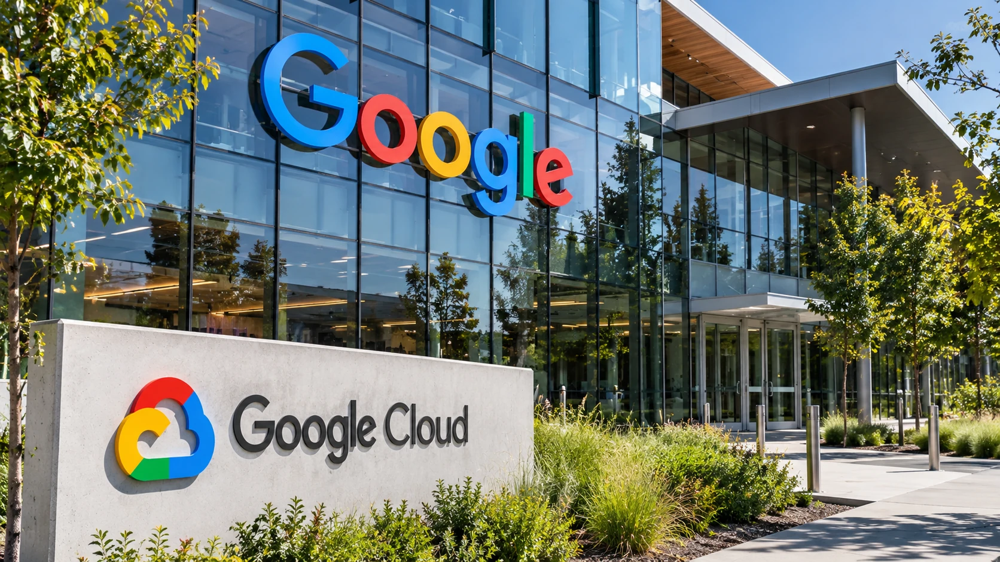

Google Expands Its AI Chip Lineup With TPU 8tx and 8i Max as Cloud Competition Intensifies
Two new configurations of Google's eighth-generation tensor processors target sensitive enterprise AI and memory-intensive applications, bringing the chipmaker's cloud strategy into sharper focus.

Google introduced two additional configurations of its eighth-generation tensor processing unit systems on Monday, November 9, expanding its proprietary AI computing lineup beyond the processors already deployed for training and inference. The new TPU 8tx is designed for confidential computing in regulated environments, while TPU 8i Max targets applications that require exceptionally large context windows and greater memory capacity. The announcement extends Google's effort to turn hardware initially designed for its own services into an increasingly significant product for outside cloud customers.
The distinction between the two systems is deliberate. Government agencies, banks and other organizations handling sensitive information face different computing requirements from AI developers processing large software repositories or long video sequences. Google is targeting both groups as the industry moves from isolated chatbot requests toward longer-running AI agents and more complex enterprise workflows. Reuters reported that the announcement intensifies competition with Nvidia, which has dominated the market for high-end AI accelerators.
Security is the focus of TPU 8tx
In its official announcement, Google described TPU 8tx as a system optimized for secure and confidential inference, with support for smaller training workloads. Inference refers to running an already trained model to generate responses, classifications or predictions. The 8tx is aimed at users that need to process proprietary data without exposing sensitive information unnecessarily to other components of a computing environment.
Google said the new configuration combines its TPU technology with AMD processors and hardware-level encryption. Reuters reported the company's claim that this approach delivers up to twice the speed of a previous version with little performance trade-off. As with any vendor performance assertion, the figure depends on the benchmark, configuration and workload. Google has not established in the reviewed materials that every application will achieve that improvement, and independent enterprise deployments will be needed to evaluate actual gains.
Confidential computing addresses an important problem for organizations introducing AI into regulated work. Encryption can protect information while stored or transmitted, but data must also be protected when applications actively process it. Hardware-backed isolation can reduce certain exposure risks. It does not eliminate the need for access controls, secure application design, audit trails or compliance checks. For a bank deploying an AI assistant to analyze internal documents, those layers remain essential regardless of the chip it selects.
TPU 8i Max addresses the memory bottleneck
The second product, TPU 8i Max, is engineered for a different limitation: moving and storing enough data to keep large AI workloads productive. Google says it combines two TPU 8i chips in one package, doubling compute, on-chip SRAM and high-bandwidth memory throughput relative to the single-chip TPU 8i configuration. Its objective is to support massive context windows and higher computing density within a data center rack.
Context is the information a model can consider during a task. A coding assistant reviewing an entire repository or an AI system processing extensive video may need far more context than a chatbot answering a short question. Such workloads can be constrained as much by memory capacity and bandwidth as by raw processor arithmetic. Higher density can help operators fit more computing within existing floor space, but total power use, cooling and network capacity remain important constraints.
Google's announcement emphasizes that these are new TPU systems, not necessarily wholly new chip architectures. The company explained that systems combine processors, packaging, memory, networking and security features. Those elements can change more quickly than the silicon at the heart of a processor, allowing Google to adapt configurations to evolving customer requirements without designing an entirely new generation for every use case.
The commercial importance extends beyond Gemini
Google began building TPUs more than a decade ago for internal workloads, and they remain central to its own products, including Gemini. The company now says its TPU business serves nearly 100 customers across sectors such as research, trading, retail and universities. Reuters reported that Google Cloud revenue more than doubled to $30.71 billion in the September quarter and that TPU sales made a meaningful contribution to that result, according to Alphabet.
This does not mean that all cloud growth came from custom processors or that the new systems already generated revenue. It shows why Google has a commercial reason to expand its offering. Companies building AI services want alternatives in price, availability and technical specialization. Customers may also be reluctant to depend on a single hardware supplier for every workload. Competing on software compatibility, deployment flexibility and actual application performance is as important as competing on chip specifications.
For Nvidia, the new systems represent another source of competition, though they do not demonstrate a wholesale move away from GPUs. Many developers rely on Nvidia's mature tools and existing investments. Google is seeking to reduce the practical cost of using its chips by improving serving software and operational tools. The broader debate over AI infrastructure spending is examined in our AI capital financing coverage, while another recent article examines SoftBank's caution toward the U.S. data center market.
Software and system utilization will matter
Alongside the hardware, Google announced an open-source XLA Serving Engine intended to help developers train models in Python and serve them using a low-latency C++ runtime across TPUs, GPUs and CPUs. It also highlighted infrastructure capabilities on Google Kubernetes Engine, including scheduling and distributed execution across hardware. These tools are important because accelerators can sit idle while software waits for data, external tools or human input.
Google cited improved workload benchmarks and faster job startup and recovery in certain configurations. Those are company-reported comparisons, not universally applicable performance guarantees. Enterprise buyers will need to evaluate total cost of ownership, software migration, service availability and reliability against alternatives. Chip performance alone rarely determines the final economics of an AI deployment.
There is also a wider infrastructure question. Even if a processor uses space or energy efficiently, an organization still needs suitable power delivery, cooling and network connectivity. Our data center electricity analysis explains why capacity constraints are influencing technology investment decisions independently of chip design.
What comes next
The next measure of Google's strategy will be whether outside customers deploy 8tx and 8i Max for sustained production workloads and whether observed cost and performance outcomes resemble company claims. Pricing, broad availability, procurement arrangements and independent benchmarking remain important details for customers to examine. Competitors' responses, especially in confidential computing and memory-intensive AI, will provide further evidence of how quickly specialization is becoming a purchasing priority.
The November 9 announcement is a sign of a more segmented AI hardware market. Rather than treating every workload as a reason to buy the same type of processor, Google is offering distinct systems for privacy-sensitive inference and unusually large context requirements. That differentiation is meaningful, even before the market can measure its commercial success.
Sources and documentation
- Google Cloud, “Our newest TPUs: 8tx and 8i Max, built for the agentic era,” November 9, 2026: Original source
- Reuters, “Google unveils new AI chip variants as cloud demand surges,” November 9, 2026: Original source